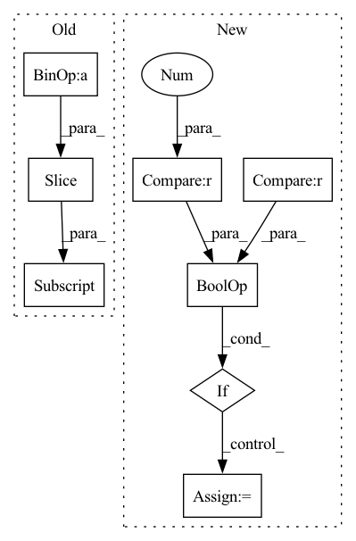

Pattern ID :32622
Before Change
if self.context > 1:
z = [x]
for d in range(1, self.context // 2 + 1):
z_u = torch.zeros_like(x)
z_u[:, d:, :] = x[:, :-d, :] // i-d
z.append(z_u)
z_d = torch.zeros_like(x)
z_d[:, :-d, :] = x[:, d:, :] // i+d
z.append(z_d)
x = torch.cat(z, dim=2) // (B, N, C*width)
After Change
B, N, C = x.shape
x = self.contextize(x, self.context) // (B, N, C*context)
if self.mix_base > 0 and x_base is not None :
x_base = self.contextize(x_base, self.mix_base) // (B, N, 4*mix_base)
x = torch.cat((x_base, x), dim=2)
x = x.view(B*N, -1) // (B*N, C*width)In pattern: SUPERPATTERN
Frequency: 4
Non-data size: 8
Instances Fragment ID: 94981976
Project Name: mxfold/mxfold2
Commit Name: 998dd44f054b5851de1d3b751eb20091d5bf5628
Time: 2019-11-11
Author: satoken@bio.keio.ac.jp
File Name: dnnfold/fold/layers.py
M Class Name: FCUnpairedLayer
N Class Name: FCUnpairedLayer
M Method Name: forward(3)
N Method Name: forward(2)
M Parent Class: nn.Module
N Parent Class: nn.Module
M File Name: dnnfold/fold/layers.py
N File Name: dnnfold/fold/layers.py
M Start Line: 212
M End Line: 223
N Start Line: 255
N End Line: 263
Before Change
sequence, actions, _, _, _ = self.real_env.envs[0].sample_buffer()
index = int(torch.randint(len(sequence) - self.config.stacking, (1,)))
initial_frames = sequence[index:index + self.config.stacking]
initial_actions = actions[index:index + self.config.stacking]
self.simulated_env.env_method("restart", initial_frames, initial_actions, indices=i)
losses = self.agent.learn(After Change
)
postfix.update(losses)
if eval_period > 0 and i % eval_period == 0 :
eval_scores = self.evaluate_agent()
postfix.update({"eval_score": np.mean(eval_scores), "eval_score_std": np.std(eval_scores)})
t.set_postfix(postfix) Fragment ID: 94981996
Project Name: thomas-schillaci/simple
Commit Name: e178ec3721f240bc74a4ef308787060c6c1b64bc
Time: 2020-12-22
Author: thomas.schillaci@gmail.com
File Name: simple/__main__.py
M Class Name: SimPLe
N Class Name: SimPLe
M Method Name: train_agent_sim_env(3)
N Method Name: train_agent_sim_env(2)
M Parent Class:
N Parent Class:
M File Name: simple/__main__.py
N File Name: simple/__main__.py
M Start Line: 70
M End Line: 87
N Start Line: 74
N End Line: 109
Before Change
training_size = int(len(trajs) * DATASET_SPLIT_RATIO.training)
val_size = int(len(trajs) * DATASET_SPLIT_RATIO.val)
print("val_size:", val_size)
return trajs[training_size:training_size + val_size]
@staticmethod
def get_test_data(trajs):
training_size = int(len(trajs) * DATASET_SPLIT_RATIO.training)After Change
def get_val_data(trajs):
training_size = int(len(trajs) * DATASET_SPLIT_RATIO.training)
val_size = int(len(trajs) * DATASET_SPLIT_RATIO.val)
if val_size == 0 and len(trajs) >= 5 :
val_size = 1
print("val_size:", val_size)
return trajs[-val_size:]
Fragment ID: 94981975
Project Name: liuruoze/mini-alphastar
Commit Name: 78c678cf91829bc8e144c1748f31a7a9e28b14cc
Time: 2021-03-25
Author: liuruoze@163.com
File Name: alphastarmini/core/sl/dataset_pickle.py
M Class Name: AllReplayDataset
N Class Name: AllReplayDataset
M Method Name: get_val_data(1)
N Method Name: get_val_data(1)
M Parent Class: Dataset
N Parent Class: Dataset
M File Name: alphastarmini/core/sl/dataset_pickle.py
N File Name: alphastarmini/core/sl/dataset_pickle.py
M Start Line: 146
M End Line: 149
N Start Line: 147
N End Line: 151